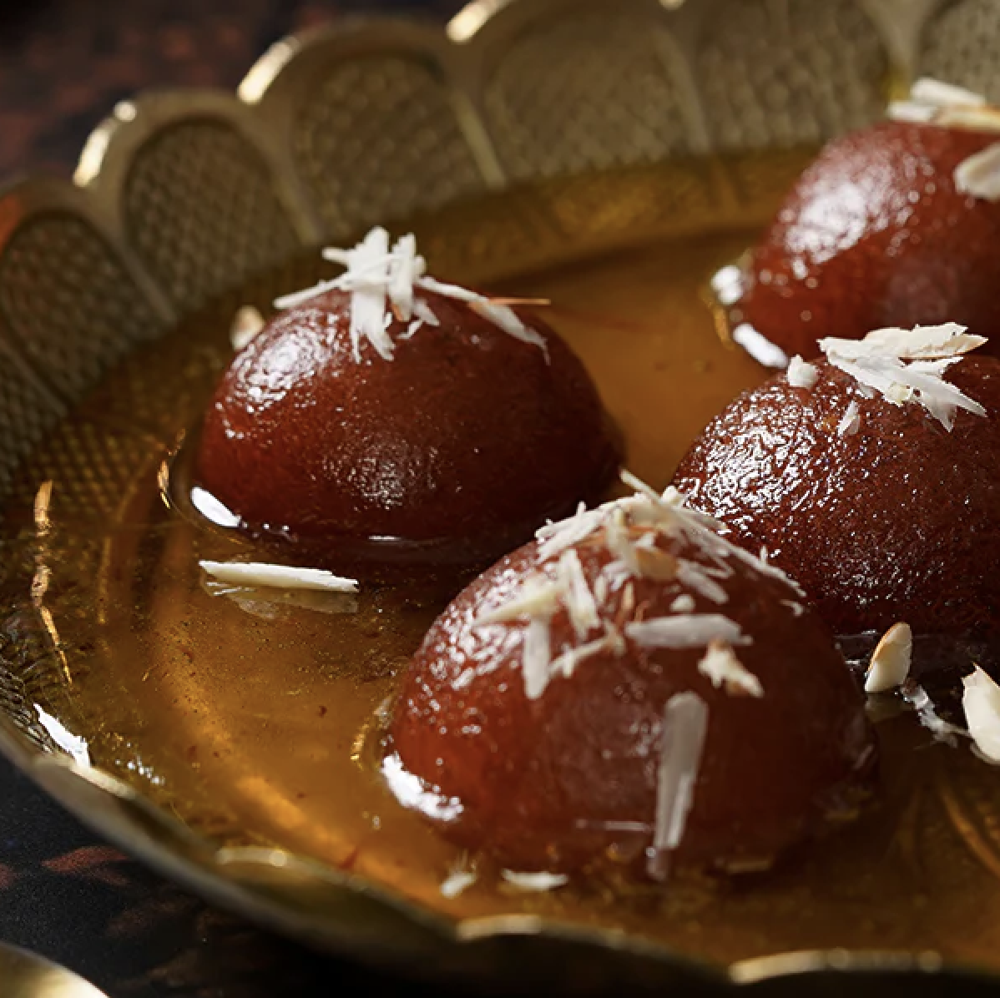

GulabJamun
Ingredients
- 1/2 tin Nestlé MILKMAID
- 2 cups (200 gm ) Flour
- 600 gm, grated Paneer
- 200 gm Sooji/Rava
- 1½ tsp Baking Powder
- 1½ tsp Baking Soda
- for frying Oil
- 2 litres Water
- 1 kg Sugar
- 6-8 nos, coarsely crushed Cardamom
Process
- Boil sugar and water to prepare syrup remove from fire; add cardamom and keep aside to cool.
- In a mixing bowl put the flour, paneer, sooji, Nestlé MILKMAID , baking powder and baking soda. Mix gently to make a soft dough, do not knead too much.
- Divide the mixture into 30-35 portions and gently roll into round gulab jamuns. Fry in the oil at very low flame till golden brown in color.
- Keep putting the fried gulab jamuns in the prepared sugar syrup, once all the gulab jamuns are in the sugar syrup bring it to a boil and remove from flame.
- Serve warm.

Samosa
Ingredients
- 2 cup all purpose flour
- 5 boiled potato
- 1/4 cup water
- 2 cup refined oil
- salt as required
- 2 tablespoon ghee
- 1 teaspoon cumin powder, carom seeds, kasoori methi leaves
- 1 teaspoon red chilli powder, coriander powder
- 1/2 teaspoon garam masala powder
- 1 teaspoon green chilli
Process
- Sauté cumin seeds for potato filling To make delicious samosas at home, first, make the filling. Put a pan on medium flame and add 2 tsp oil in it. Once the oil is hot enough, add cumin seeds and allow them to crackle.
- Add spices and boiled potatoes and cook for a while Now, add whole coriander seeds, ginger and green chilli. Saute for a minute and then add chopped cashews and raisins, peanuts if you like them, boiled and mashed potatoes, cumin powder, coriander powder, garam masala powder, red chilli powder, salt to taste, kasoori methi leaves, coriander leaves. Mix well and saute for 2 minutes. Your stuffing is ready!
- Prepare the dough for the Samosa Now, to prepare the dough, take a mixing bowl and combine all-purpose flour along with carom seeds and salt. Mix and then add ghee and start kneading by adding a little water at a time. Ensure that you add water gradually and make a firm dough. A soft dough will not make your samosas crispy. Cover the dough with a damp muslin cloth and keep aside for about half an hour.
- Roll the dough in small puris and cut into half Once done, roll out few small-sized balls from the dough. Flatten them further with the help of your palms and then with a rolling pin. Give them a round shape and cut in half. Now dip your hands in water, fold the edges of the semi-circle in order to give it a cone shape.
- Fill the semi-circle with potato filling and deep fry Take the filling with the help of a spoon and stuff it in the cone. Seal the ends properly by pressing the edges lightly with your fingers. Then, heat oil in a pan and deep fry the samosas on low heat until they turn golden brown and crispy. Serve with tomato ketchup and green chutney. Enjoy it as a tea-time snack!
Motichoor Laddoo
Ingredients
- 2 1/2 cup gram flour (besan)
- 3 cup ghee
- 2 pinch baking soda
- 1 1/2 teaspoon green cardamom
- 1/2 teaspoon edible food color
- 3 cup sugar
- 2 cup water
Process
- Make the boondi batter. To make this traditional Indian sweet at home, take a large bowl to add 2 1/2 cups of gram flour, then mix orange colour and mix it well. Then, add some water and a little baking soda. Blend the mixture well and make sure there are no lumps. Once the blend attains a perfect consistency, it's time to move to the next step.
- Prepare the boondi. Now, heat ghee in a large deep frying pan. Place a perforated ladle (jhada) on top of the oil and add some of the batter. Slowly let the boondi batter fall in the oil and cook them on a low flame, till properly cooked. Once done, place the boondi on a tissue paper to remove excess oil.
- Prepare sugar syrup and mix with the boondis. Then, take a pan and add some water and sugar, allow this blend to boil until it attains a two-string consistency. Then add some cardamom powder and let it cook. Then add the boondis and cook till the sugar syrup and boondi is perfectly mixed. Cover it with the lid and turn off the flame.
- Garnish and relish! Grease your hands with a little ghee and start shaping the ladoos. Place them in an open tray and garnish with some crushed nuts and indulge in the goodness.
Paani-poori
Ingredients
- 1 cup semolina
- water as required
- 3 teaspoon cumin powder
- 5 green chilli
- 1/2 teaspoon baking soda
- Refined oil as required
- Black salt as required
- 4 tablespoon crushed jaggery
- Tamrind chutney as required
- 3 teaspoon roasted cumin powder
- 1 cup wheat flour
- 1 cup coriander leaves
- Salt as required
- 1 1/2 cup mint leaves
- 4 boiled,mashed potato
- green chutney as required
- black pepper as required
Process
- Knead the dough. To make this easy Pani Puri recipe at home, take a bowl and add semolina, wheat flour, baking soda along with a little salt and water as required and prepare a stiff dough. Adding semolina will make the puris crispy. Then, cover it with a muslin cloth, let it remain aside for about half an hour..
- Roll out puris. After half an hour, knead the flour again and roll out a few small-sized balls from the prepared dough. Next, place the balls on a flat surface and with the help of wheat flour, flatten and make them thin enough to give them the appearance of very small, round puris. You can alternately roll out a large puri and cut small discs with a round cookie cutter or small bowl.
- Deep fry the puris. Now, place a pan on medium flame and pour refined oil. Once the oil is sufficiently hot, fry the prepared round-shaped puris. Fry 3-4 at a time while making sure each one puffs all right. Also, keep the flame medium as excess heat might burn the puris.
- Cool these fried puris. Once well-cooked, take them out immediately and place them on a paper towel in order to get rid of extra oil. Let them cool and keep aside. Your next step would be to prepare pani for the puris.
- Sieve to remove any impurities. Then, make the prepared pani go through a sieve in order to remove the coarse particles. Once done, put it in the refrigerator to chill. Now all that remains is to prepare the stuffing for the puris. For that, take a bowl and combine mashed potato along with chickpeas. Add salt and pepper according to your taste.
- Step 6 Sieve to remove any impurities. Then, make the prepared pani go through a sieve in order to remove the coarse particles. Once done, put it in the refrigerator to chill. Now all that remains is to prepare the stuffing for the puris. For that, take a bowl and combine mashed potato along with chickpeas. Add salt and pepper according to your taste.
- Serve Pani Puri with chickpeas, tamarind chutney and the fresh pani. Lastly, take the puris and make a small hole in each using your thumb. Stuff the chickpea-potato mixture in equal portions. Add a layer of green and tamarind chutney in them and serve alongside chilled mint pani. Enjoy this street food recipe with your loved ones.